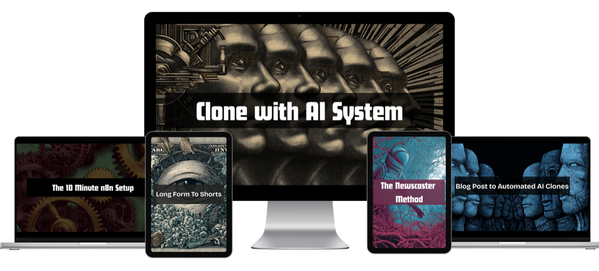

AI Video Clone Course - Automate HeyGen Videos With n8n
The best training should teach more than creating a digital avatar. It should connect consent-based avatar setup, voice and script quality, HeyGen video generation, n8n workflow automation, error handling and publishing. The real outcome is a repeatable video system, not one impressive demo.
Build the complete avatar workflow
See the training, automation workflows, current price and 30-day guarantee on the official Clone With AI page.

View Clone With AICreating a believable avatar is now the easy part to demonstrate. A polished sample can be generated in an afternoon. The harder part is building a process that keeps producing useful videos without someone manually moving the script, voice, video file and publishing details between five tools.
That difference separates an avatar tutorial from automation training. One teaches you to make a clip. The other teaches you to build an operating system for repeated video production.
This guide explains the skills that matter, the realistic tool stack, the mistakes that stop automated systems and how to judge a paid program before enrolling.
What an AI video clone course should teach
A complete program needs to solve six connected problems. If one is missing, the system normally falls back to manual work.
Plenty of tutorials cover the first box and stop. That can be enough if you only want to create the occasional avatar clip. It is not enough when the promise is automated production.
The curriculum should end with something that runs. A workflow file, a working trigger, a completed render and a clear approval step provide stronger proof of learning than hours of theory.
It should also explain what remains manual. Consent recording, brand decisions and final approval are not failures of automation. They are intentional controls. A course promising to remove every human decision is usually ignoring the parts most likely to create reputation or accuracy problems.
The system you are actually learning to build
A useful pipeline begins before the avatar platform. It needs a source of topics, a way to develop an accurate angle and a script format that sounds natural when spoken. Sending raw AI copy directly to a presenter usually produces stiff videos that look automated in the worst possible way.
- Choose or collect the topic. A scheduled feed, approved spreadsheet row, article URL or manual form can start the workflow.
- Research and draft the script. The writing stage should preserve sources, distinguish facts from opinion and format the script for spoken delivery.
- Send the job for generation. n8n can assemble the request, authenticate with the video service and submit the chosen avatar, voice and script.
- Wait without breaking the run. Video rendering is asynchronous. The workflow must check status, handle timeouts and avoid creating duplicates.
- Inspect the result. A human approval point catches pronunciation problems, odd visuals, factual errors and brand issues before they spread.
- Finish and distribute. Captions, b-roll, storage, titles and platform publishing can happen after approval.
The fourth step is where many beginner builds fall apart. An API accepts the request, but the finished file is not returned instantly. A reliable workflow stores the job ID, waits, asks for status and branches cleanly when the render succeeds or fails.
This is why learning n8n matters. The visual canvas makes the process easier to inspect, but you still need to understand what each node receives, what it returns and what should happen when the expected data is missing.
A second required skill is state management. The workflow needs to remember that a topic was selected, a script was approved and a generation job was submitted. Without those status fields, a retry can create duplicate videos or publish an old version after a new script has already replaced it.
Course examples should show those records clearly. A spreadsheet can work for a small system. Airtable, a database or another structured store becomes useful when several videos move through different stages at the same time.
The practical tool stack
Avatar and voice generation
HeyGen is a common choice for creating a custom digital twin and generating presenter videos from scripts. Its standard creator plans and API products are priced separately, so automated production costs should be calculated from the intended volume and model.
Use the browser product to test visual quality first. Our HeyGen free trial guide explains the current $0 plan and a three-video evaluation method.
Workflow automation
n8n connects the steps. It can receive a trigger, call an AI model, submit a video job, wait for completion, store the file and send an approval notification. The Community Edition can be self-hosted, while n8n Cloud provides a managed service with a free trial and paid execution limits.
A visual workflow is not the same as zero technical thinking. Credentials, JSON data, webhooks and APIs still matter. A well-designed beginner program explains those ideas through a real build instead of dumping documentation on the student.
Editing and finishing
An avatar render may still need captions, aspect-ratio changes, b-roll or short-form styling. A tool such as Submagic can serve as an automated finishing layer. See our short-form editor evaluation for current features and tradeoffs.
Storage and publishing
Generated files need a dependable home before publication. Cloud object storage, Google Drive or another managed file system can work. The workflow should use stable file names and preserve the script, source and render status so a failed publish does not force the whole job to be regenerated.
Budget beyond the tuition price
Course price is only one part of the budget. Avatar generation, automation hosting, AI writing, editing and storage can all create recurring costs.
| Layer | Typical choice | Cost question to answer |
|---|---|---|
| Avatar video | HeyGen creator plan or API | How many minutes and premium generations are required? |
| Automation | n8n Cloud or self-hosting | Will you pay for convenience, a server or both? |
| Writing model | AI API | How many research and script calls run per video? |
| Finishing | Caption and editing platform | Is it included, manual or charged per video? |
| Storage | Drive or object storage | How long are source and output files retained? |
A responsible course should show where keys are entered and what gets billed when a workflow runs. A template with hidden third-party expenses is not a complete budget.
Estimate cost per completed video instead of cost per tool. Add the avatar generation, script calls, editing allowance, storage and any automation hosting. Then include failed attempts. A workflow that succeeds nine times out of ten has a different cost from one that needs three renders for every publishable result.
Our featured structured option
Clone With AI Video Automation System is built around the complete workflow rather than avatar creation alone. The training covers custom avatar setup, the automation blueprint and the path from topic and script to generated video. It uses HeyGen for avatar output and n8n for workflow automation.
The current offer is $495 as a one-time purchase and carries a 30-day money-back guarantee. Published bonuses include a blog-post-to-video workflow, a news-driven video method, a quick-start n8n setup resource and a long-form-to-shorts workflow.
The strongest fit is a creator, coach, marketer, agency or business owner who wants to build a repeatable content system and is willing to maintain the connected tools. Someone who only needs one custom avatar and plans to make videos manually may not need the automation depth.
It is self-paced training rather than a done-for-you service. Buyers should expect to create accounts, connect credentials, import workflows, test outputs and make decisions about their own brand voice and publishing process.
The offer page currently shows a one-time price rather than a recurring tuition fee. Third-party tools remain separate expenses, and usage costs can rise when production volume increases. The 30-day guarantee gives the buyer a defined period to inspect the training and attempt the setup.
See the full video automation system
Review the curriculum, example workflows, current bonuses, price and guarantee on the official training page.
View Clone With AIHow the learning paths compare
Free tutorials are best for answering one narrow question. They can show how to create an avatar, authenticate an API call or import a workflow. The tradeoff is fragmentation. Tool versions differ, missing steps are common and the tutorial author is not responsible for the whole system.
Marketplace classes usually provide more structure. They are useful when the goal is avatar creation, presentation skills or a guided introduction. Check the update date carefully because interfaces, pricing and API fields can change quickly.
A workflow-focused program costs more because it joins several tools and includes deployable assets. The value depends on whether those assets match the system you want. A library of unrelated templates is less useful than two complete workflows that solve the exact publishing job.
Updates and support matter more than lesson count
Avatar platforms and automation nodes change. A course can have 50 polished lessons and still become less useful than a shorter program that updates the workflow files when an API field changes.
Look for a clear support channel, an update date and a way to obtain corrected files. Ask whether support covers the course workflow or general custom development. Those are different promises, and confusing them creates frustration on both sides.
When a workflow fails, provide the execution log, the node name and a sanitized sample of the input. "It doesn't work" forces support to guess. Learning how to report a failure is part of learning how to operate the system.
What credible proof looks like
The strongest demonstration is a complete run. You should be able to see a topic enter the system, a script appear, a render job start and a finished file arrive at the review step.
Views and rankings can be useful outcomes, but they depend on topic selection, channel history, distribution and audience fit. Do not assume an avatar alone creates traffic. The automation increases production capacity; content strategy still decides what that capacity produces.
Before-and-after time is another valuable proof point. If a manual process takes two hours and the controlled workflow reduces active work to 20 minutes, the system has demonstrated value without needing an income claim.
The maintenance lesson that cannot be skipped
Every connected system eventually encounters an expired credential, a renamed field, a usage limit or an API change. Training should show where to view logs, how to replay a failed job and how to update one step without rebuilding the entire workflow.
Keep a clean export of every working version and record the tool versions used by the instructor. Test changes with a private destination before turning public publishing back on. A 15-minute maintenance routine can protect a system that saves hours every week.
| Learning path | Best for | Main advantage | Main risk |
|---|---|---|---|
| Free videos | One specific task | No tuition cost | Scattered and quickly dated |
| Marketplace class | Guided fundamentals | Clear lesson sequence | May stop at manual creation |
| Workflow program | Repeated automated output | Connected system and templates | Higher price and tool costs |
| Done-for-you service | Businesses avoiding setup | Fastest path to deployment | Highest ongoing cost |
Questions to ask before enrolling
- Does the program build a working end-to-end workflow or only teach avatar creation?
- Which tools require separate subscriptions or usage credits?
- Are the workflow files included and editable?
- Does the training explain failed jobs, retries and duplicate prevention?
- Is a human approval step shown before public publishing?
- When was the course last updated for the current APIs?
- Is support available when credentials or nodes behave differently?
- What consent and disclosure practices are taught?
A sales page can show a beautiful finished video without answering any of those questions. The system underneath determines whether you can repeat the result.
Consent, disclosure and responsible use
Create a digital twin only from a person who has provided clear permission. Do not clone another person's face or voice because the technology makes it possible. Platforms can require recorded consent, and laws or advertising rules may require disclosure depending on the jurisdiction and use.
Keep the original consent record, source recording and account ownership information. If an employee, spokesperson or client is represented, settle who can generate new videos and what happens when the relationship ends.
Accuracy also matters. An avatar can confidently speak a false statement written upstream. Source preservation and human approval are part of the safety system, not optional polish.
Common questions
Do I need to know how to code?
Not in the traditional sense, but you need to learn workflow logic, credentials, API requests and basic data mapping. Good training explains these through practical builds.
Which tools are normally required?
A typical stack uses an avatar platform, n8n, an AI writing model, storage and a publishing destination. Caption or editing software may be added after generation.
Can every step be automated?
Research, scripting, generation and file handoffs can be automated. Keep human review for facts, pronunciation, brand quality and approval until the system has earned trust.
How long does setup take?
A basic imported workflow can run quickly once accounts and credentials are ready. A dependable production process takes longer because it needs testing, failure handling and brand-specific decisions.
Can the system be used for client work?
Yes, with clear permission, account ownership, usage rights and an approval process. Price the third-party usage and maintenance rather than selling unlimited output blindly.
Bottom line
Choose training that ends with a repeatable pipeline. Avatar quality gets attention because it is visible. Workflow reliability, consent, fact checking and cost control determine whether the system remains useful after the first week.
The featured program is a strong fit when you specifically want HeyGen and n8n working together for automated content production. If your goal is simply learning the automation platform, start with our n8n course for beginners guide and build the foundation first.
Research sources: the current Clone With AI offer page, HeyGen pricing, HeyGen API documentation, and n8n documentation. Checked September 23, 2026.
Commercial disclosure: The featured training is a compensated Shoals Marketing offer. Tool subscriptions are separate unless the official checkout page explicitly states otherwise.